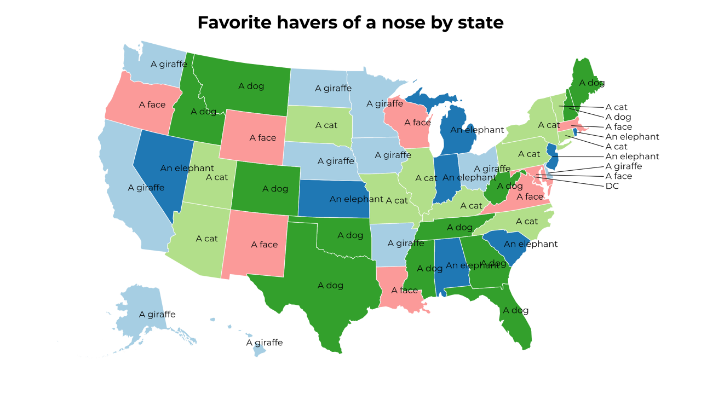
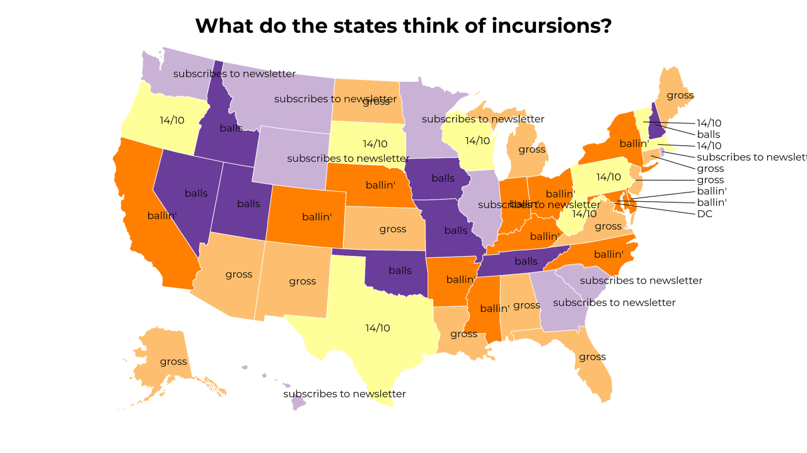
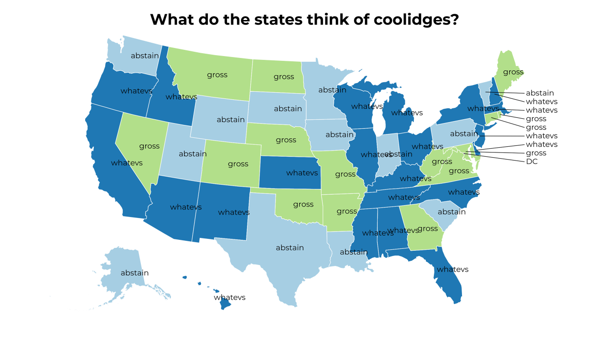
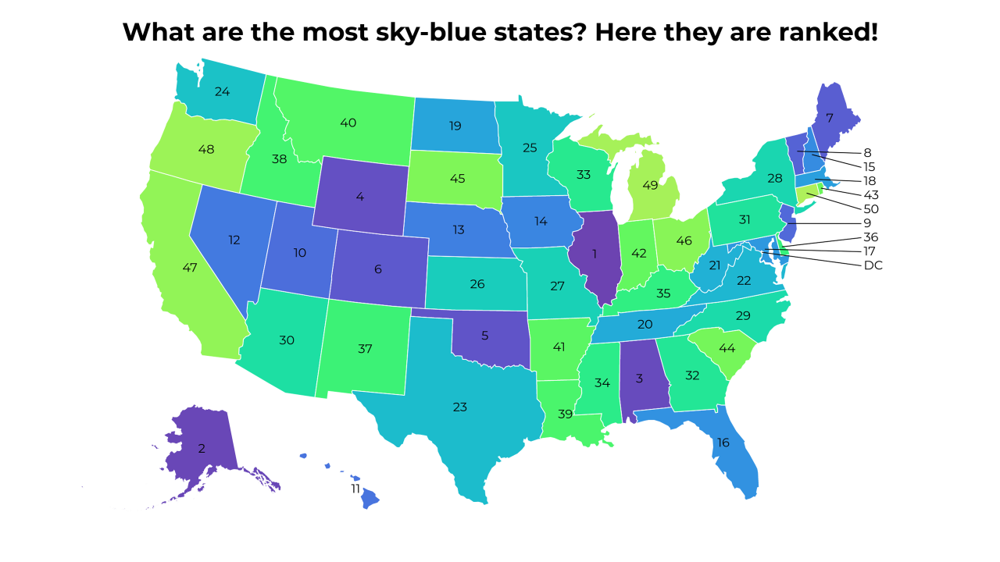
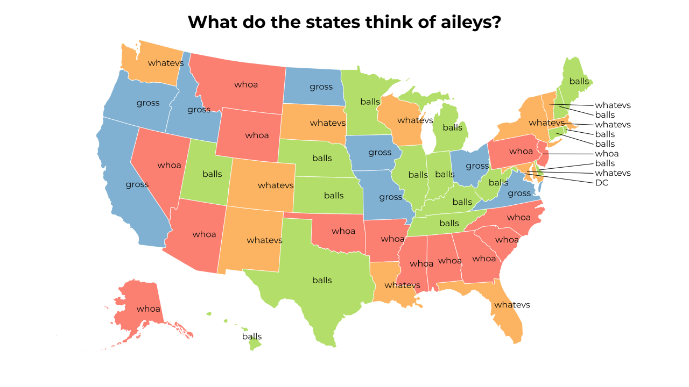
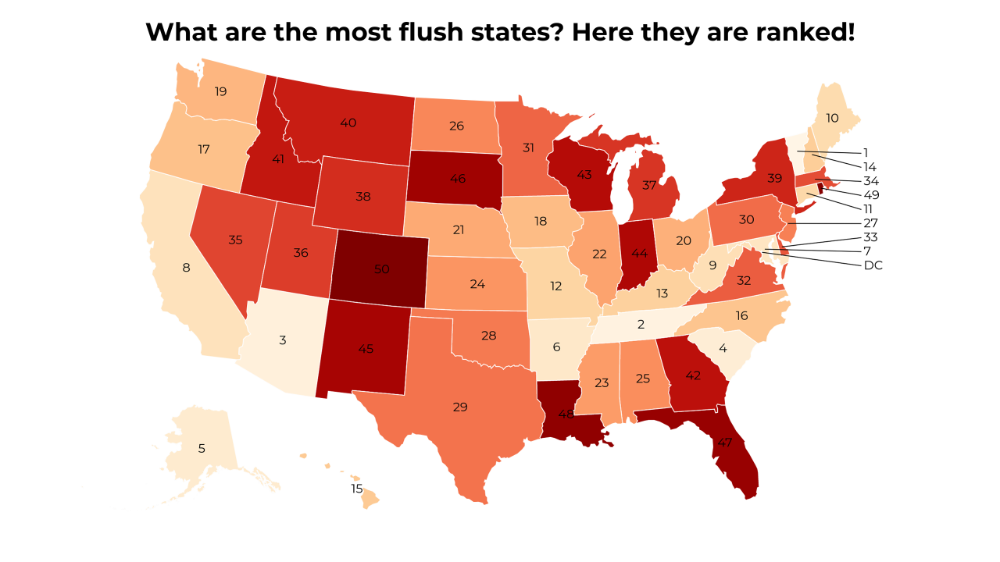
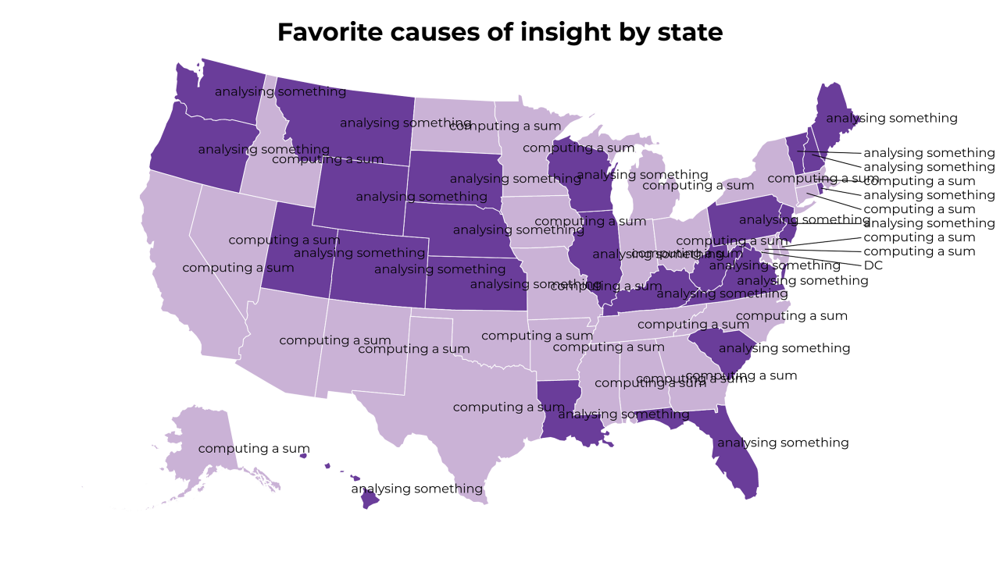
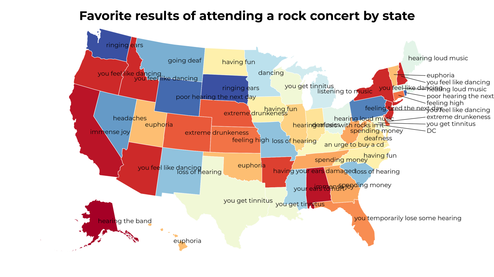
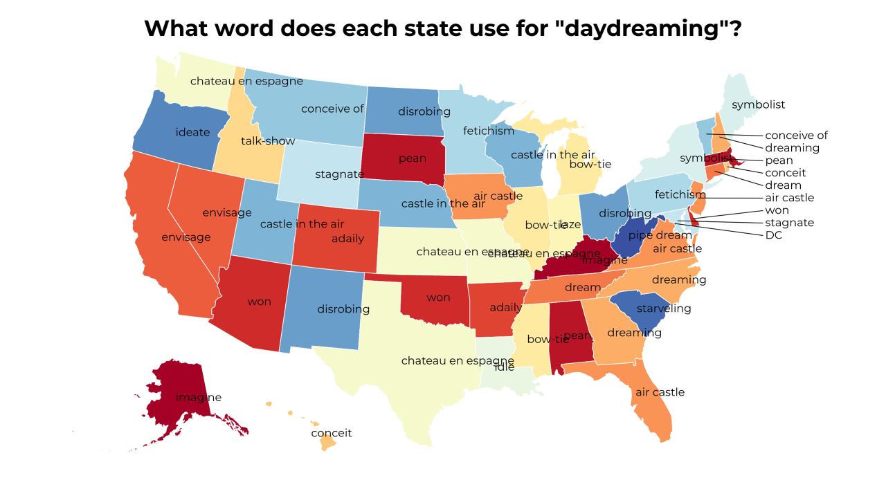
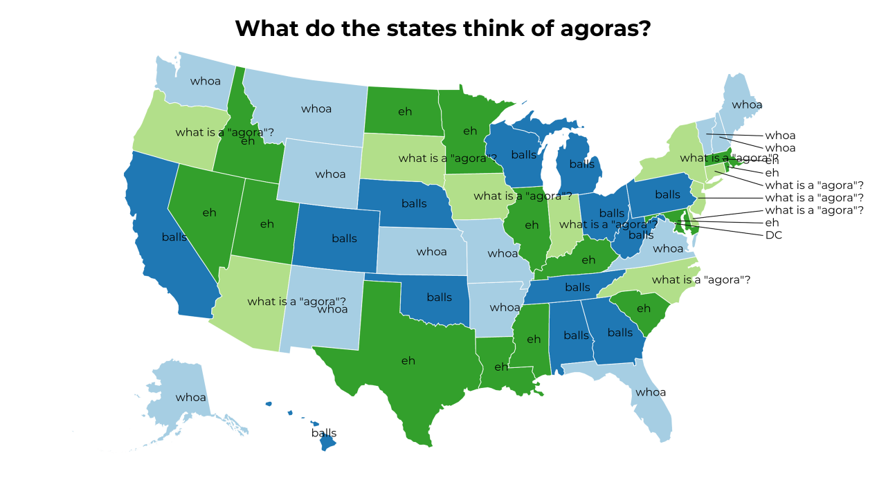

A Land of Contrasts
2018-5-5 02:30:16

Favorite havers of a nose by state
2018-5-4 23:30:16

What do the states think of incursions?
2018-5-4 20:30:16

What do the states think of coolidges?
2018-5-4 17:30:15

What are the most sky-blue states? Here they are ranked!
2018-5-4 14:30:19

What do the states think of aileys?
2018-5-4 11:30:16

What are the most flush states? Here they are ranked!
2018-5-4 08:30:16

Favorite causes of insight by state
2018-5-4 05:30:16

Favorite results of attending a rock concert by state
2018-5-4 02:30:20

What word does each state use for "daydreaming"?
2018-5-3 23:30:16

What do the states think of agoras?
15
|
14
|
13
|
12
|
11
|
10
|
9
|
8
|
7
|
6
|
5
|
4
|
3
|
2
|
1
|
0